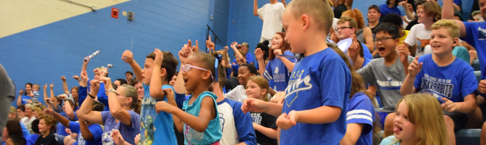

Welcome to the Kansas Commission for the Deaf and Hard of Hearing

Promoting access, education, and opportunity for the Deaf and Hard of Hearing community in Kansas.
Apply NowWhat We Do
The Kansas Commission for the Deaf and Hard of Hearing (KCDHH) is dedicated to advocating for and facilitating equal access to quality, coordinated, and comprehensive services that enhance the lives of Kansans who are deaf or hard of hearing.
- Information & Referral: Connecting individuals to appropriate services and resources statewide.
- Interpreter Coordination: Maintaining a registry of qualified sign language interpreters and facilitating their placement.
- Advocacy & Public Education: Promoting awareness and understanding of deaf and hard of hearing issues through outreach and education.